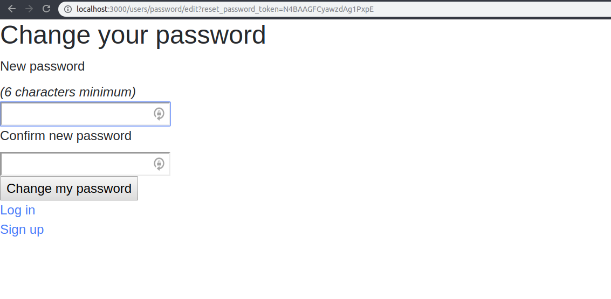

La semaine dernière tu as vu comment faire des logins à la main. C'est plutôt long et fastidieux. Et encore, nous n'avons pas implémenté d'e-mail de confirmation de compte ou de système de récupération de mot de passe (qui nécessitent d'utiliser des tokens et des hash).
Aujourd'hui, tu vas voir une gem qui te fait tout ce travail et qui va vite te devenir indispensable sur Rails : la gem Devise.
Devise permet de créer un système d'authentification complet en générant pour toi :
Bref, une gem très puissante qui t'aidera à bien gérer tes futures applications. Dans cette ressource, nous allons t'aider à la dompter.
Devise a été créée fin 2009 par plataformatec, un cabinet de conseil spécialisé en Rails. C'est devenu un standard en Rails et on te conseille de toujours l'appliquer à tes futures applications : ça doit être quasiment la première fonctionnalité que tu implémentes !
Chaque fonctionnalité de Devise est inclus dans un module qu'on peut activer ou non :
Nous allons voir dans cette ressource les plus importantes : Database Authenticatable, Registerable, Recoverable, Rememberable, Validatable.
Nous allons faire un petit pas à pas pour que tu puisses voir les éléments importants de Devise. Prêt ? En avant : commence par créer une app bidon rails. Ensuite, fais chaque opération en même temps que je la décris.
Pour installer Devise, il faut d'abord commencer par mettre la gem dans le Gemfile, puis faire bundle install.
Ensuite, installe Devise avec la commande suivante :
$ rails generate devise:installCe qui a pour effet de créer deux fichiers :
config/initializers/devise.rb : le fichier de
configuration de Devise. On s'en servira par exemple pour paramétrer le
service que l'on va utiliser pour les envois d'e-mails ;config/locales/devise.en.yml : un fichier contenant les messages d'erreur de Devise. Tu pourras utiliser ses version françaises quand tu seras plus à l'aise avec la gem.Après avoir créé les fichiers, le terminal va t'afficher un message
avec 4 actions indispensables à mener. La plus importante est la
première : il faut que tu paramètres bien Action Mailer afin que Devise
puisse passer par lui pour envoyer des emails (notamment pour
réinitialiser un mot de passe). Hier nous avons vu comment faire les
branchements ActionMailer en local et sur Heroku : assure-toi toujours
qu'il y a au moins l'information suivante dans le fichier config/environments/development.rb :
config.action_mailer.default_url_options = { host: 'localhost', port: 3000 }Grâce à ça, quand tu cliqueras sur "réinitialiser mon mot de passe" pour la tester, l'application ne plantera pas. Maintenant tout est réglé pour utiliser Devise. Super !
Devise utilise comme Rails un générateur qui va nous mâcher le
travail. Pour dire à Devise quel model va être géré par elle (avec la
notion de session, login, etc), il faut faire rails g devise NomDuModel.
La majorité du temps cela concerne les utilisateurs, mais parfois cela peut concerner les admins (par exemple un blog accessible à tout visiteur). Ainsi, pour une app normale dans laquelle nous voulons avoir Devise branchée sur les utilisateurs, tu dois faire :
$ rails g devise UserCela va créer et modifier quelques fichiers, mais trois nous intéressent beaucoup : un fichier de migration, un fichier de model, et une modification des routes.
Voici le fichier de migration que Devise va te générer :
# frozen_string_literal: true
class DeviseCreateUsers < ActiveRecord::Migration[5.2]
def change
create_table :users do |t|
## Database authenticatable
t.string :email, null: false, default: ""
t.string :encrypted_password, null: false, default: ""
## Recoverable
t.string :reset_password_token
t.datetime :reset_password_sent_at
## Rememberable
t.datetime :remember_created_at
## Trackable
# t.integer :sign_in_count, default: 0, null: false
# t.datetime :current_sign_in_at
# t.datetime :last_sign_in_at
# t.inet :current_sign_in_ip
# t.inet :last_sign_in_ip
## Confirmable
# t.string :confirmation_token
# t.datetime :confirmed_at
# t.datetime :confirmation_sent_at
# t.string :unconfirmed_email # Only if using reconfirmable
## Lockable
# t.integer :failed_attempts, default: 0, null: false # Only if lock strategy is :failed_attempts
# t.string :unlock_token # Only if unlock strategy is :email or :both
# t.datetime :locked_at
t.timestamps null: false
end
add_index :users, :email, unique: true
add_index :users, :reset_password_token, unique: true
# add_index :users, :confirmation_token, unique: true
# add_index :users, :unlock_token, unique: true
end
endC'est une migration pour créer une table users, puis lui
ajouter les attributs qui serviront à Devise de paramètres. De base,
Devise ne gère que les attributs sous les sections Database Authenticatable, Registerable, Recoverable, Rememberable, et Validatable.
Les autres attributs peuvent être activés en dé-commentant les lignes qui t'intéressent. Comme nous ne nous intéressons qu'aux 5 modules déjà activés, inutile de modifier la migration actuelle.
Mais dis-donc Jamy, comment on fait si l'on a déjà créé le model User ?
Devise est plutôt intelligente, puisque elle va changer ta migration de create_table à change_table. Il y aura deux détails à gérer :
self.up qui liste les changements qui vont avoir lieu sur la table users si la migration est passée et self.down qui liste les changements si on rollback la migration. Tu peux voir un exemple dans la documentation. Il faudra (idéalement - sinon tout rollback sera inefficace) penser à compléter à la main la partie self.down pour lister ce qui doit être enlevé avec des : remove_column ou des remove_index.Voici le fichier de model généré par Devise:
class User < ApplicationRecord
# Include default devise modules. Others available are:
# :confirmable, :lockable, :timeoutable, :trackable and :omniauthable
devise :database_authenticatable, :registerable,
:recoverable, :rememberable, :validatable
endCes quelques lignes vont juste dire à ton model, "hey, c'est possible de faire, sur tout objet de type User,
des actions de type database_authenticatable, registerable,
recoverable, rememberable, et validatable". Tu peux rajouter des actions
en déplaçant dans la liste devise certaines options présentes en commentaire.
Normalement le fichier des routes devraient t'afficher devise_for :users. Voyons l'impact de cette ligne avec un petit $ rails routes dans ton terminal :
Prefix Verb URI Pattern Controller#Action
new_user_session GET /users/sign_in(.:format) devise/sessions#new
user_session POST /users/sign_in(.:format) devise/sessions#create
destroy_user_session DELETE /users/sign_out(.:format) devise/sessions#destroy
new_user_password GET /users/password/new(.:format) devise/passwords#new
edit_user_password GET /users/password/edit(.:format) devise/passwords#edit
user_password PATCH /users/password(.:format) devise/passwords#update
PUT /users/password(.:format) devise/passwords#update
POST /users/password(.:format) devise/passwords#create
cancel_user_registration GET /users/cancel(.:format) devise/registrations#cancel
new_user_registration GET /users/sign_up(.:format) devise/registrations#new
edit_user_registration GET /users/edit(.:format) devise/registrations#edit
user_registration PATCH /users(.:format) devise/registrations#update
PUT /users(.:format) devise/registrations#update
DELETE /users(.:format) devise/registrations#destroy
POST /users(.:format) devise/registrations#createOn va les décrypter une à une :
devise/sessions#new : pour accéder à la view de connexion.devise/sessions#create : le POST pour se connecter.devise/sessions#destroy : le DELETE pour se déconnecter.devise/passwords#new : pour accéder à l'écran "mot de
passe oublié ?" où tu rentres ton adresse email pour recevoir un email
de réinitialisation de mot de passe.devise/passwords#create : le POST pour réinitialiser le mot de passe.devise/passwords#edit : pour accéder à la view où tu
rentres ton nouveau mot de passe (tu y accèdes en cliquant dans le lien
"réinitialiser le mot de passe" dans ton email de réinitialisation de
mot de passe)devise/passwords#update : le PATCH/PUT pour changer de mot de passe.devise/registrations#cancel (rarement utilisée) : pour accéder à la view permettant de supprimer une inscription.devise/registrations#new : pour accéder à la view d'inscription au site.devise/registrations#create : le POST pour s'inscrire sur le site.devise/registrations#edit : pour accéder à la view de modification d'une inscription (notamment son email et son mot de passe).devise/registrations#update : le PATCH/PUT pour modifier son email et mot de passedevise/registrations#destroy : le DELETE pour détruire son compteComme tu peux le voir, Devise gère pas mal de routes pour nous. L'autre bonne nouvelle est que les controllers sont déjà faits et que (sauf rare exception), il ne faut pas les toucher. A présent, tout est branché pour fonctionner correctement en local : il ne reste qu'à gérer les views.
Avec Devise, il est facile de générer les views que la gem va gérer, il suffit de rentrer la ligne suivante :
$ rails generate devise:viewsAinsi, voici une liste des views qui sont créées par cette commande :
app/views/devise/shared/_links.html.erb : une petite
partial qui affiche les liens dont tu as besoin en fonction de la page
(exemple : le lien "mot de passe oublié" sur l'écran de connexion).app/views/devise/confirmations/new.html.erb : l'écran de confirmation (pas besoin pour le moment).app/views/devise/passwords/edit.html.erb : la vue où
tu rentres ton nouveau mot de passe (tu y accèdes en cliquant dans le
lien "réinitialiser le mot de passe" dans ton email de réinitialisation
de mot de passe).app/views/devise/passwords/new.html.erb : l'écran "mot de passe oublié ?" où tu rentres ton adresse email pour recevoir un email de réinitialisation de mot de passe.app/views/devise/registrations/edit.html.erb : l'écran pour modifier les informations de son compte utilisateur (notamment son email et son mot de passe).app/views/devise/registrations/new.html.erb : la page d'inscription au site.app/views/devise/sessions/new.html.erb : la page de connexion au site.app/views/devise/unlocks/new.html.erb : écran pour déverrouiller son compte (pas besoin pour le moment).Au passage, plusieurs e-mails sont générés :
app/views/devise/mailer/confirmation_instructions.html.erb : e-mail pour confirmer son compte (pas besoin pour le moment).app/views/devise/mailer/email_changed.html.erb : e-mail pour annoncer un changement d'e-mail.app/views/devise/mailer/password_change.html.erb : e-mail pour annoncer que ton mot de passe a été changé.app/views/devise/mailer/reset_password_instructions.html.erb : e-mail pour donner le lien pour changer de mot de passe.app/views/devise/mailer/unlock_instructions.html.erb : e-mail pour débloquer ton compte (pas besoin pour le moment).Pour le moment, ces vues sont assez basiques mais elles ont le mérite d'exister ! Lance le serveur, va sur /users/sign_up : tu devrais voir un écran d'inscription avec e-mail et mot de passe rudimentaire, mais fonctionnel.
Clique sur le lien "login" : idem, tu devrais avoir un écran pour te connecter, avec en plus le lien pour t'inscrire, et le lien du mot de passe oublié. Clique sur ce dernier, qui devrait te demander une adresse e-mail, etc.
A ce stade, Devise est prêt à l'emploi. Reste à intégrer les views à l'ensemble de ton app : nous allons voir ça !
user_signed_in? et current_userCommençons par créer une page d'accueil : fais $ rails g controller static_pages index secret, ce qui devrait générer un controller static_pages et 2 méthodes (index et secret). Il est assez pratique de réunir toutes tes pages statiques dans un seul et même controller.
Fais en sorte que static_pages#index soit la root de ton application, puis va sur app/views/static_pages/index.html.erb pour y mettre les lignes suivantes :
<ul>
<% if user_signed_in? %>
<li>
<%= link_to "Sign out", destroy_user_session_path, method: :delete %>
</li>
<li>
Voici ton email : <%= current_user.email %>
</li>
<li>
<%= link_to "Secret page", static_pages_secret_path %>
</li>
<li>
<%= link_to "Edit email / password", edit_user_registration_path %>
</li>
<% else %>
<li>
<%= link_to "Sign in", new_user_session_path %>
</li>
<li>
<%= link_to "Sign up", new_user_registration_path %>
</li>
<% end %>
</ul>Va sur la page d'accueil et inscris-toi, connecte-toi, déconnecte-toi
: tu vois que la page d'accueil affiche les boutons qui correspondent à
ton état de connexion. Tout ça simplement grâce à un if dans la view et l'utilisation de helpers comme user_signed_in? ou current_user dont la documentation de Devise parle.
Voilà la force de Devise, l'application gère toutes les notions de login / logout pour toi via des helpers, notamment :
user_signed_in? te renvoie true/false selon si un utilisateur est connecté ou non.current_user te renvoie l'objet User correspondant à l'utilisateur connecté.Maintenant prends 5 minutes pour bien comprendre le code de index.html.erb ci-dessus et repère où sont les 2 helpers dont je parle.
Si tu mets un email valide dans l'écran "mot de passe oublié", et si tu as bien mis la ligne config.action_mailer.default_url_options = { host: 'localhost', port: 3000 },
l'application ne devrait pas t'envoyer d'erreur. Mais si tu n'as pas
letter_opener de branché, elle te redirige juste vers l'écran de login.
Que fait-elle alors 🤔 Si tu vas dans ta console de serveur, quelques
lignes devraient t'intéresser :
Devise::Mailer#reset_password_instructions: processed outbound mail in 7.2ms
Sent mail to fef@fef.fef (1.2ms)
Date: Tue, 05 Feb 2019 18:06:18 +0100
From: please-change-me-at-config-initializers-devise@example.com
Reply-To: please-change-me-at-config-initializers-devise@example.com
To: fef@fef.fef
Message-ID: <5c59c28a83b46_545d2add4ce62f5462976@felix.mail>
Subject: Reset password instructions
Mime-Version: 1.0
Content-Type: text/html;
charset=UTF-8
Content-Transfer-Encoding: 7bit
<p>Hello fef@fef.fef!</p>
<p>Someone has requested a link to change your password. You can do this through the link below.</p>
<p><a href="http://localhost:3000/users/password/edit?reset_password_token=5nsneTHVGFWypsNVHuc4">Change my password</a></p>
<p>If you didn't request this, please ignore this email.</p>
<p>Your password won't change until you access the link above and create a new one.</p>
Redirected to http://localhost:3000/users/sign_in
Completed 302 Found in 29ms (ActiveRecord: 10.8ms)En gros ton application envoie un email comme convenu (et son
texte est visible dans le terminal), mais comme rien n'est paramétré
pour le local, les emails sont justes envoyés via le serveur. Ce qui
nous intéresse dans cet email, c'est l'url pour réinitialiser son mot de
passe, celle qui fait http://localhost:3000/users/password/edit?reset_password_token=ton_token.
Copie-colle cette url (à partir de TON terminal bien entendu sinon le
token ne sera pas le bon), puis va sur le lien. Tu devrais avoir un lien
qui te propose de changer ton mot de passe. Trop cool !
authenticate_user!Faisons d'autres tests de Devise : va sur la page /users/edit
en étant connecté. Tu devrais y arriver sans souci. Déconnecte-toi et
réessaye d'y aller : Devise te bloque et te demande de te connecter.
Sécurité AU TOP.
Maintenant va sur la page /static_pages/secret en étant
connecté : top. Puis déconnecte-toi et va dessus en étant déconnecté :
tu peux y accéder également. Comment ne donner l'accès à cette page
qu'aux utilisateurs connectés ? Gràce à la méthode authenticate_user!. Va dans le static_pages_controller, puis ajoute en ligne 2 la ligne suivante :
before_action :authenticate_user!, only: [:secret]Maintenant tente d'aller sur /static_pages/secret en
étant déconnecté : super, Devise t'a redirigé vers l'écran de login.
Petit bonus : si tu te connectes à partir de cet écran, Devise va savoir
où tu voulais aller et va t'envoyer ensuite sur /static_pages/secret. Pas mal pour une gem.
Devise vient avec des views qui sont pour le moins minimalistes. Avec Bootstrap, y'a moyen de transformer rapidement les formulaires de Devise pour ne pas se retrouver avec un page affreuse de ce style :
Tu auras l'occasion, pendant le projet, de pimper les views mais on te propose une page d'inscription au site utilisant Bootstrap :
<div class="container">
<div class="row">
<div class="col-md-6 offset-md-3">
<br><br><br>
<%= form_for resource, as: resource_name, url: registration_path(resource_name), html: { class: "form-signin mt-3" } do |f| %>
<h1 class="h3 mb-3 font-weight-normal text-center">Sign up</h1>
<%= devise_error_messages! %>
<div class="form-group">
<%= f.label :email, "Email" %><br />
<%= f.email_field :email, autofocus: true, autocomplete: "email", class: "form-control" %>
</div>
<div class="form-group">
<%= f.label :password %>
<% if @minimum_password_length %>
<em>(<%= @minimum_password_length %> characters minimum)</em>
<% end %><br />
<%= f.password_field :password, autocomplete: "new-password", class: "form-control" %>
</div>
<div class="form-group">
<%= f.label :password_confirmation %><br />
<%= f.password_field :password_confirmation, autocomplete: "new-password", class: "form-control" %>
</div>
<div class="actions mt-5">
<%= f.submit "Sign up", class: "btn btn-lg btn-primary btn-block" %>
</div>
<% end %>
<%= render "devise/shared/links" %>
</div>
</div>
</div>Pour avoir un rendu un peu professionnel, prends le temps de gérer les 5 views les plus importantes de Devise : connexion, inscription, édition du profil, récupération par mail de son mot de passe et changement de mot de passe.
Le mailer est important dans Devise. Sans ce dernier, les
utilisateurs qui ont perdu leur mot de passe n'ont plus accès à ton
application et c'est pas ouf... L'avantage est que si ton mailer est
bien branché, tout devrait être fonctionnel immédiatement, sauf une
chose : il faut donner l'url de ton application pour la redirection. Je
m'explique : quand tu vas recevoir un email pour récupérer ton mot de
passe, l'email va te donner un lien à cliquer qui va rediriger vers
l'application sur un formulaire pour changer le mot de passe. Il faut
donc dire à Rails "pour la production (sur Heroku), l'URL de mon app est
: monapp.herokuapp.com". Insère donc la ligne suivante dans le fichier config/environments/production.rb :
config.action_mailer.default_url_options = { :host => 'YOURAPPNAME.herokuapp.com' }Devise est très "Convention over configuration". Cette gem aime BEAUCOUP les conventions, et en sortir est un appel à la galère. Voici donc des astuces si jamais tu veux sortir des rails de Devise :
Changer le code source des controllers de Devise est une très mauvaise idée à ton niveau.
Imaginons que tu veux envoyer un email à un utilisateur à sa
création, ou enregistrer ses infos sur un fichier Spreadsheet. Ceci est
un after_create dans ton model et n'a rien à faire dans le controller.
Imaginons que tu veux rediriger sur une page spécifique après
l'inscription de ton utilisateur. Au lieu de modifier le controller de
Devise, ces derniers ont prévu une super méthode after_sign_up_path_for qui fera ceci. Tu peux trouver plus d'info sur le wiki de la gem, et voici une vidéo qui explique cela.
Les pages registrations/edit et registrations/new ne comportent, de base, que l'email et le mot de passe de l'utilisateur. Mais tu veux potentiellement pouvoir mettre d'autres informations sur cette page : nom, prénom, adresse, etc.
Pour faire cela, deux méthodes :
registrations/edit pour modifier l'email et le mot de passe (Un peu comme la page settings/admin de GitHub) et une autre page users/edit pour changer le reste des détails comme ton code postal, ton prénom, ta description de profil, (Un peu comme la page settings/profile de GitHub)En résumé, si on imagine que tu veux pouvoir définir un first_name, last_name et is_alive 😉 à la fois dans la page registration/new (sign-up) et registration/update (update), il te faut rajouter des champs <%= f.text_field :first_name>, <%= f.text_field :last_name> et <%= f.check_box :alive%> dans le form_for de ces views.
Ensuite tu vas dans app/controller/application_controller.rb et tu rajoutes les lignes :
before_action :configure_devise_parameters, if: :devise_controller?
def configure_devise_parameters
devise_parameter_sanitizer.permit(:sign_up) {|u| u.permit(:first_name, :last_name, :is_alive, :email, :password, :password_confirmation)}
devise_parameter_sanitizer.permit(:account_update) {|u| u.permit(:first_name, :last_name, :is_alive, :email, :password, :password_confirmation)}
endLe wiki de Devise a une rubrique How-Tos qui contient une centaine de tutoriels pour customiser Devise.
Pour pouvoir utiliser Devise, voici la marche à suivre :
$ rails generate devise:install
config.action_mailer.default_url_options = { host: 'localhost', port: 3000 } dans ton fichier config/environments/development.rb$ rails g devise user. Puis tu migres.$ rails generate devise:viewsuser_signed_in? (retourne true/false selon si un utilisateur est connecté) et current_user (retourne l'objet User correspondant à la personne connectée)secret en rajoutant dans le controller lui correspondant un petit before_action :authenticate_user!, only: [:secret]Il existe deux autres gems qui s'occupent de l'authentification. Elles sont moins "machines à café" que Devise, mais peuvent t'intéresser si tu aimes les gems plus minimalistes :
Dans ce projet, tu vas reprendre le projet de la veille pour y construire tes premières vues. Tu vas installer Devise sur ton application et construire les premières vues.
Plus en détails, voici ce que nous attendons de toi :
User à DeviseCela peut paraître flou, mais avec le REST, quelques méthodes de controllers, et un branchement Devise, ton application sera faite bien plus rapidement que la semaine qu'il t'a fallu pour l'application Gossip Project (alors que les deux applications sont très similaires). Ceci est dû principalement au fait que tu commences à gérer la fougère. Bravo ;)
Avant de commencer, nous allons faire la première vue de
l'application : la page d'accueil. Cette page d'accueil est la liste des
événements de ta ville, donc l'index des événements. Génère un events_controller, avec la méthode index. Branche cette méthode index à la page d'accueil du site.
Bootstrap te permettra d'avoir une navbar qui te permet de naviguer dans l'application. Cette navbar contiendra les liens suivants :
events#new)registrations#new).sessions#new).users#show).sessions#destroy).Fais donc cette navbar. Comme les routes de ces liens ne sont pas encore définies, mets # aux urls des liens. On les implémentera au fur et à mesure.
Passons aux choses sérieuses. Nous allons passer par Devise pour
toute l'authentification de ton application. Installe Devise et
branche-la au model User comme vu dans le cours :
En temps normal, on créé le model user en même temps que le branchement Devise. Cependant, si l'on tavait demandé hier de faire la base de données ET brancher les emails ET brancher Devise, ton pauvre cerveau aurait déclaré forfait 😵
On va donc t'aider pour cette migration un peu rocambolesque. Ne t'en fais pas, ça va bien se passer et rien ne te pêtera à la gueule. Grosso modo, on va juste changer le fichier de migration.
Installe Devise comme prévu, puis génère le devise user via $ rails g devise user.
Cela va créer un fichier de migration, qui n'est pas bon. En effet,
comme Devise est ajouté sur un model déjà existant, la gem ne sait pas
trop comment gérer cette migration donc il y aura quelques éléments à
changer. Ce sera l'occasion de réviser en douceur les migrations avec ce
petit pas à pas. Super non ?
Encore une fois, en général on créé le model via son ajout avec Devise ; mais comme il y avait beaucoup d'informations à gérer hier, on a pensé à ta santé mentale et à ton cerveau.
Déjà, Devise avait compris que ton model User existe déjà : le fichier de migration ne fait plus create_table, mais change_table
(si l'on compare avec celui donné dans la ressource). Malin. L'autre
changement majeur par rapport à la ressource est qu'il ne fait plus def change, mais def self.up et def self.down. En gros Devise te laisse plus de choix dans ce que tu veux faire. Sympa, mais on s'en bat un peu les couilles pour le moment.
Maintenant, si tu regardes le self.down, tu devrais voir les lignes suivantes :
def self.down
# By default, we don't want to make any assumption about how to roll back a migration when your
# model already existed. Please edit below which fields you would like to remove in this migration.
raise ActiveRecord::IrreversibleMigration
endEn gros, Devise te dit "on ne sait pas trop comment tu as géré ton
model user jusqu'à présent, donc la seule ligne que l'on va mettre est raise ActiveRecord::IrreversibleMigration". Cette ligne va balancer une erreur et tu devras changer à la main le self.down
pour faire marcher le rollback. Pour résumer, tu peux faire des
migrations vers up, mais vers down il va te balancer une erreur. On va
rectifier cela.
Enfin, avec un peu d'attention, tu peux remarquer que le fichier de migration va créer une colonne pour les emails et une colonne pour les encrypted_password. Comme tu l'as déjà fait hier, pas besoin de les ajouter. D'ailleurs si tu fais ta migration, cela plantera en te disant que les colonnes emails et encrypted_password existent déjà.
Pour résumer, voici ce qu'il faut faire pour faire marcher ton fichier de migration :
def self.up par def changedef self.down (le def.self.down ainsi que le end, ainsi que ce qui est à l'intérieur)email et une colonne encrypted_passwordVoilou ! Tu pourras faire des migrations, des rollbacks, utiliser Devise comme un chef, faire la samba, et siroter un thé pendant que tes cookies seront cuisinés par cette gem qui fait le café (cette blague est drôle parce que en fait j'ai utilisé thé et café dans la même phrase. trolol).
Une fois que Devise est branchée, je veux que tu génères les views de Devise :
app/views/devise/registrations/new.html.erb : inscription au site : accessible depuis la navbarapp/views/devise/sessions/new.html.erb : connexion au site : accessible depuis la navbarapp/views/devise/passwords/new.html.erb : l'écran
"mot de passe oublié ?" où tu rentres ton adresse email pour recevoir un
email de réinitialisation de mot de passe : accessible grâce à la
partial shared_linksapp/views/devise/registrations/edit.html.erb : l"écran pour modifier son email et son mot de passe : accessible depuis la page profil.app/views/devise/passwords/edit.html.erb : la vue où
tu rentres ton nouveau mot de passe (tu y accèdes en cliquant dans le
lien "réinitialiser le mot de passe" dans ton email de réinitialisation
de mot de passe) : accessible depuis l'email de demande de changement de
mot de passe.Nous te laissons ajouter les liens d'inscription et de connexion à la navbar, puis de faire en sorte que toutes les views affichent bien la navbar.
Enfin, pour que Devise fonctionne correctement, il te faut faire le branchement du mailer. Rien de plus frustrant de faire une demande de réinitialisation de mot de passe et de ne jamais recevoir son mot de passe. Fais donc les modifications nécessaires pour que Devise envoie bien les emails de récupération.
Une fois que tu as fait cela, pousse le tout sur Heroku et assure toi que ça marche aussi bien que sur ton ordi !
Et là, tu réalises que tu viens de réaliser un système complet d'authentification d'utilisateurs, fonctionnel et en production. C'est une excellente étape vers un site fonctionnel et tu peux être fier de toi.
Avant de passer à cette partie, assure toi que l'ensemble des fonctionnalités demandées ci-dessus fonctionne au poil : c'est le minimum pour valider le projet.
Dans cette partie, nous allons construire les premières views pour que l'application commence à marcher. C'est un processus long donc tu n'arriveras probablement pas à tout faire :
events#index)users#show) => Essaye de finir cette viewevents#new) => Super si tu arrives jusqu'icievents#show) => Pour les plus déterminésTu peux commencer à générer les controllers, leurs méthodes, et
écrire les routes pour ces premières views. Bien entendu, il est
interdit d'utiliser les routes en GET/POST et tu devras utiliser resources.
La page d'accueil du site affiche tous les événements de
l'application. Pour chaque événement, tu pourras cliquer sur un lien qui
t'emmènera vers la page show de l'événement. La page d'accueil invitera l'utilisateur à créer son événement.
Pour le front, on est comme d'habitude fans des exemples de Bootstrap. La page jumbotron par exemple a l'air de bien correspondre à ce que l'on veut en page d'accueil.
Bien sûr assure toi que ton seed génère quelques Event afin de donner un peu de contenu à cette page d'accueil.
La page profil d'un utilisateur devra afficher les informations de l'utilisateur : prénom, nom, description, e-mail (la plupart de ces informations ne sont pas encore renseignées par l'utilisateur, mais le but de cette page est de vous faire faire ce qui va suivre).
La page de profil d'un utilisateur va afficher les événements qu'il a créés (un title et un lien pour chaque Event dont il est administrateur).
Ensuite, la page de profil d'un utilisateur ne doit pas être accessible par ces deux types de personnes :
authenticate_user!)users#showEn gros, la page profil ne doit être accessible que par la personne
concernée. La page de profil doit aussi insérer un lien pour l'édition
de l'email et du mot de passe informations importantes (registrations#edit). Les autres informations (la description, le prénom, le nom) ne seront pas éditables.
BONUS pour ceux qui sont en GODMODE : vous pouvez ajouter un lien pour éditer les informations de profil (users#edit) : la description, le prénom, le nom.
À partir de la navbar (et de la page d'accueil), il est possible de créer un événement. La création d'événement demandera :
start_datedurationtitledescriptionpricelocation (un input normal suffira)Nous t'invitons à regarder la page des formulaires de Bootstrap pour t'inspirer sur les visuels que tu peux utiliser.
Quand un événement est créé, le current_user doit y être
associé en tant qu'administrateur. Cela veut dire que Devise devra
authentifier l'utilisateur avant de pouvoir faire new ou create. Une fois l'événement créé, l'utilisateur sera redirigé vers la page show de l'événement.
C'est long de tout implémenter non ? Si tu es arrivé jusqu'ici, BRAVO ! Maintenant tu vas afficher un événement. Cette page devra montrer :
Demain nous verrons la page pour s'inscrire à l'événement en tant que participant.
Un repo GitHub accueillant l'app Rails avec un maximum des fonctionnalités ci-dessus. Le tout doit être disponible sur Heroku (lien dans le README).
Avec ceci, tu as une belle application où les gens peuvent voir la liste des événements disponibles dans leur ville. C'est un excellent début et tu peux être fier de toi.
Demain nous allons ajouter les fonctionnalités pour rejoindre un événement et ton application sera prête et fonctionnelle pour être montrée à la Terre entière. À partir de jeudi on implémentera des fonctionnalités pas indispensables, mais qui vont agrémenter l'expérience utilisateur (gestion des images, interface administrateur).